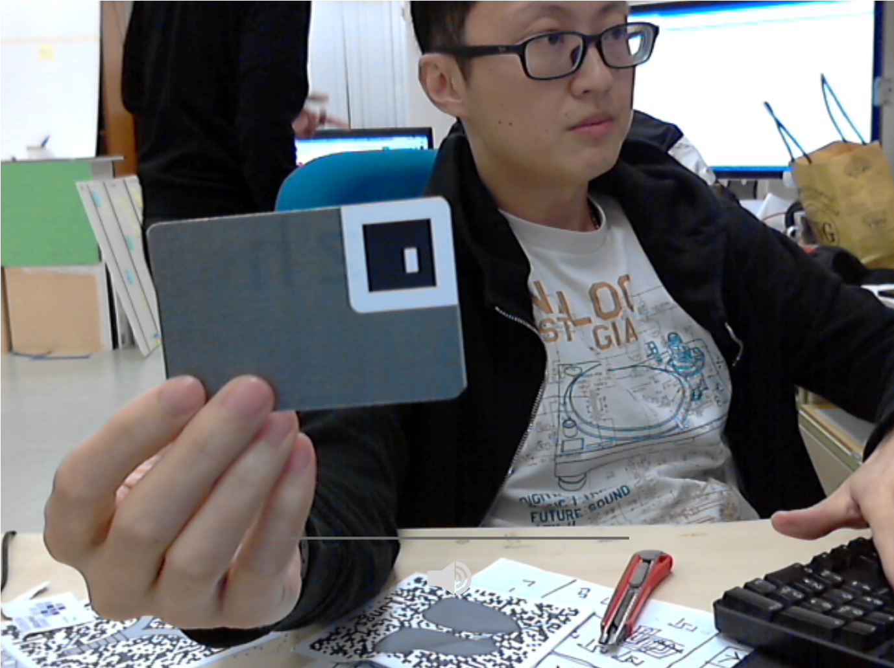

<html>
<head>
	<title>HYPY </title>
	<meta name="viewport" content="width=device-width, initial-scale=1, maximum-scale=1, user-scalable=no, minimal-ui">
	<link rel="shortcut icon" href="#" >
	<link rel="manifest" href="manifest.json">
	<meta name="mobile-web-app-capable" content="yes">
	<link rel="stylesheet" href="style.css">
</head>

<body bgcolor="white">
	<audio id="player"></audio>
	<video id="gum-local" autoplay playsinline hidden></video>
	<table align="center">
		<tr>
			<td id="mainTable">
				<canvas id="myCanvas2"></canvas>
			</td>
		</tr>
		<tr>
			<td id="mainTable2">
				<!--<canvas id="tmp_canvas" width="640" height="480" hidden></canvas> -->
				<!--<canvas id="glcanvas" width="640" height="480" style="visibility: hidden;"></canvas> -->
				<canvas id="tmp_canvas" width="640" height="480" ></canvas>
				<canvas id="glcanvas" width="640" height="480" "></canvas> 
			</td>
		</tr>
	</table>
	<!-- -->
</body>

<script async src="js/hypy-data.js"></script> 
<script async src="js/artoolkit.my.min.js"></script>
<!--<script async src="js/artoolkit.my.demin.js"></script>-->
<script async src="js/three.min.js"></script>
<script async src="https://cdnjs.cloudflare.com/ajax/libs/EaselJS/0.8.0/easeljs.min.js"></script>-->
<script async src="https://cdnjs.cloudflare.com/ajax/libs/tweenjs/0.6.2/tweenjs.min.js"></script>-->
<!--<script async src="js/easeljs-0.8.2.min.js"></script>-->
<!--<script async src="js/tweenjs-0.6.2.min.js"></script>-->
<!-- vertex shader -->
<script id="2d-vertex-shader" type="x-shader/x-vertex">
	attribute vec2 a_position;
	attribute vec2 a_texCoord;
	uniform vec2 u_resolution;
	varying vec2 v_texCoord;
	void main() {
	   vec2 zeroToOne = a_position / u_resolution; // convert the rectangle from pixels to 0.0 to 1.0
	   vec2 zeroToTwo = zeroToOne * 2.0; // convert from 0->1 to 0->2
	   vec2 clipSpace = zeroToTwo - 1.0; // convert from 0->2 to -1->+1 (clipspace)
	   gl_Position = vec4(clipSpace * vec2(1, -1), 0, 1);
	   // pass the texCoord to the fragment shader
	   // The GPU will interpolate this value between points.
	   v_texCoord = a_texCoord;
	}
</script>
<!-- fragment shader -->
<script id="2d-fragment-shader" type="x-shader/x-fragment">
	precision mediump float;
	// our texture
	uniform sampler2D u_image;
	uniform vec2 u_textureSize;
	uniform float u_kernel[9];
	uniform float u_kernelWeight;
	// the texCoords passed in from the vertex shader.
	varying vec2 v_texCoord;
	void main() {
	   vec2 onePixel = vec2(1.0, 1.0) / u_textureSize;
	   vec4 colorSum =
		   texture2D(u_image, v_texCoord + onePixel * vec2(-1, -1)) * u_kernel[0] +
		   texture2D(u_image, v_texCoord + onePixel * vec2( 0, -1)) * u_kernel[1] +
		   texture2D(u_image, v_texCoord + onePixel * vec2( 1, -1)) * u_kernel[2] +
		   texture2D(u_image, v_texCoord + onePixel * vec2(-1,  0)) * u_kernel[3] +
		   texture2D(u_image, v_texCoord + onePixel * vec2( 0,  0)) * u_kernel[4] +
		   texture2D(u_image, v_texCoord + onePixel * vec2( 1,  0)) * u_kernel[5] +
		   texture2D(u_image, v_texCoord + onePixel * vec2(-1,  1)) * u_kernel[6] +
		   texture2D(u_image, v_texCoord + onePixel * vec2( 0,  1)) * u_kernel[7] +
		   texture2D(u_image, v_texCoord + onePixel * vec2( 1,  1)) * u_kernel[8] ;
	   gl_FragColor = vec4((colorSum / u_kernelWeight).rgb, 1);
	}
</script>
<script async src="js/webgl-filter.js"></script>
<script async src="js/webgl-utils.js"></script>
<script async src="js/artoolkit.three.js"></script>
<script async src="js/feedback-animation.js"></script>

<script>

window.ARThreeOnLoad = function() {

	function playSound(soundName) {

		var player = document.getElementById("player");
		player.innerHTML = "<source src='sounds/" + soundName + ".mp3' type='audio/mpeg'>";
		//player.innerHTML = "<source src='https://yabla.vo.llnwd.net/media.yabla.com/chinese_static/audio/alicia/" + soundName + ".mp3' type='audio/mpeg'>";
		
		player.load();
		var playPromise = player.play();
		if (playPromise !== undefined) {
		    playPromise.then(_ => {
		      // Automatic playback started!
		      // Show playing UI.
		      // We can now safely pause video...
		      console.log("success play");
		    })
		    .catch(error => {
		      // Auto-play was prevented
		      // Show paused UI.
		      console.log("fail play..."+error);
		    });
		}
	}

	ARController.getUserMediaThreeScene({
		maxARVideoSize: 640,
		cameraParam: 'data/camera.dat',
		onSuccess: function(arScene, arController, arCamera) {

			var renderer = new THREE.WebGLRenderer({antialias: true});

			arSetup(arController, renderer);
			rendererCanvas = renderer.domElement;
			rendererCanvas.id = "rendererCanvas";

			sizeCanvas(rendererCanvas, window.innerWidth, window.innerHeight);
			
			var overlay = document.getElementById("myCanvas2");
			overlay.style.width = rendererCanvas.style.width;
			overlay.style.height = rendererCanvas.style.height;
			
			var ctx = overlay.getContext('2d');
			
			const width = rendererCanvas.clientWidth;
			const height = rendererCanvas.clientHeight; 

			overlay.width = width;
			overlay.height = height;

			var canvasWidth = width;
			var canvasHeight = height;

			// clicking of canvas (replay soundclip)
			overlay.onclick = function(e) {
				var rect = overlay.getBoundingClientRect();
				var canvasX = e.clientX - rect.left;
				var canvasY = e.clientY - rect.top;

				var soundIconTrueX = rect.width * soundIconPosX;
				var soundIconTrueY = rect.height * soundIconPosY;

				var diffX = Math.abs(soundIconTrueX - canvasX);
				var diffY = Math.abs(soundIconTrueY - canvasY);
				var thresh = rect.width * soundIconLength * 0.5;
				if (diffX < thresh && diffY < thresh) {
					if (soundName === "") return;
					playSound(soundName);
				}
			};

			var conv_level = 1;
			window.onkeyup = function(e) {
			   var key = e.keyCode ? e.keyCode : e.which;
			   console.log("key "+key);
			   if (key == 81) {
			   		
			        debugMode = !debugMode;
			        console.log("toggle debug "+debugMode);
			        
		       		if (debugMode) {
						var mycanvas2 = document.getElementById("myCanvas2");
						mycanvas2.style.backgroundColor = 'rgba(255,255,255,0)';
						//document.getElementById("tmp_canvas").removeAttribute("hidden");
						//document.getElementById("glcanvas").removeAttribute("style");
					} else {
						var mycanvas2 = document.getElementById("myCanvas2");
						mycanvas2.style.backgroundColor = 'rgba(255,255,255,255)';
						document.getElementById("tmp_canvas").setAttribute("hidden", "");
						//document.getElementById("glcanvas").setAttribute("hidden", "");
						// document.getElementById("glcanvas").setAttribute("style", "visibility: hidden;");
						// document.getElementById("glcanvas").width = 640;
						// document.getElementById("glcanvas").height = 480;
					}
			   }

			   if (key == 87) {
			   		arScene.toggleConv();
			   		console.log("toggle conv ")
			   }

			   if (key == 79) {
			   	  arScene.conv_level_down();
			   }

			   if (key == 80) {
			   	  arScene.conv_level_up();
			   }
			}

			sceneSetup(arScene);
			//mappingFunction();
			tick(rendererCanvas, ctx);

			easelSetup();
			
			function arSetup(arController, renderer) {
				document.body.className = arController.orientation;
				arController.setPatternDetectionMode(artoolkit.AR_MATRIX_CODE_DETECTION);

				arController.borderStyle = "white";
				
				// setting renderer size
				if (arController.orientation === 'portrait') {
					var w = (window.innerWidth / arController.videoHeight) * arController.videoWidth;
					var h = window.innerWidth;
					renderer.setSize(w, h);
					renderer.domElement.style.paddingBottom = (w-h) + 'px';
				} else {
					if (/Android|mobile|iPad|iPhone/i.test(navigator.userAgent)) {
						renderer.setSize(window.innerWidth, (window.innerWidth / arController.videoWidth) * arController.videoHeight);
					} else {
						renderer.setSize(arController.videoWidth, arController.videoHeight);
						document.body.className += ' desktop';
					}
				}
				
				// add three js renderer to main_table
				var mainTable = document.getElementById("mainTable");
				//mainTable.appendChild(renderer.domElement, mainTable);
				mainTable.appendChild(renderer.domElement);
			}
			
			function sceneSetup(arScene) {

				var sphere = new THREE.Mesh(
					new THREE.SphereGeometry(0.5, 10, 10),
					new THREE.MeshNormalMaterial()
				);
				sphere.material.shading = THREE.FlatShading;
				sphere.position.z = 1.0;

				var torus = new THREE.Mesh(
					new THREE.TorusGeometry(0.1*2.5, 0.2*2.0, 10, 10),
					new THREE.MeshNormalMaterial()
				);
				torus.material.shading = THREE.FlatShading;
				torus.position.z = 1.25;
				torus.rotation.x = Math.PI/2;
				
				var cube = new THREE.Mesh(
					new THREE.BoxGeometry(1,1,1),
					new THREE.MeshNormalMaterial()
				);
				cube.material.shading = THREE.FlatShading;
				cube.position.z = 0.5;

				for(var i=0; i<62; i++) {
					var markerRoot = arController.createThreeBarcodeMarker(i);
					markerRoot.markerID = i;
					arScene.scene.add(markerRoot);
				}
			}

			function markerRecord(id, pos, vertex, timestamp, area) {
				var retval = {};
				retval.id = id;
				retval.pos = pos.slice();
				retval.vertex = cloneObj(vertex);
				retval.timestamp = timestamp;
				retval.area = area;
				return retval;
			}

			// trim arr that is longer than length len to len
			function shiftToLength(arr, len) {
				while(arr.length > len) {
					arr.shift();
				}
				return arr;
			}

			function percentValid(tonePosCheckHistory, invert, full) {

				if (tonePosCheckHistory === null) return 0;
				if (tonePosCheckHistory.length === 0) return 0;

				// only return real valid value after buffer is full
				if (full && tonePosCheckHistory.length < bufferSize) return 0;


				var validCount = 0;
				tonePosCheckHistory.forEach(function(b) {if (b) validCount++});
				var percent = validCount / tonePosCheckHistory.length;
				if (invert) return (1 - percent);

				//console.log((percent * 100)+ " percent valid here ");
				return percent;
			}

			function retireOld(history) {
				var stopFlag = false;
				while (history.length > 0 && !stopFlag) {
					var elapsed = Date.now() - history[0].timestamp;
					if (elapsed > 2000) {
						history.shift();
					} else {
						stopFlag = true;
					}
				}
			}

			function retireOld2(avgPos) {
				//console.log(Object.keys(avgPos).length);
				Object.keys(avgPos).forEach(function(key) {
			        var apos = avgPos[key];

			        if (apos === undefined)
			        	return;

			        var elapsed = Date.now() - apos.timestamp;

			        if (elapsed > 2000) {
						avgPos[key] = undefined;
					} else {
						stopFlag = true;
					}
			    });
			}

			function lerp(a, b, f)
			{
			    return a + f * (b - a);
			}

			function validCombiCheck(shengmuText, yunmuText) {
				if (shengmuText === "") return true;
				if (yunmuText === "") return true;
				//if (shengmuText == "" || yunmuText == "") return true;
				var arr = validCombi[shengmuText];
				if (arr === undefined) return false;
				return (arr.indexOf(yunmuText) !== -1);
			}
			function cloneObj(obj) {
				return JSON.parse(JSON.stringify(obj));
			}

			// 20 marker width
			// 90 card width
			function markerWidth(id) {

				var x1 = markerTracked[id].vertex[1][0];
				var x2 = markerTracked[id].vertex[2][0];
				var x3 = markerTracked[id].vertex[3][0];
				var x4 = markerTracked[id].vertex[0][0];

				var dx1 = Math.abs(x2 - x1);
				var dx2 = Math.abs(x3 - x2);

				var dx3 = Math.abs(x4 - x3);
				var dx4 = Math.abs(x1 - x4);
			
				var dx_max = Math.max(dx1, dx2, dx3, dx4);
				return dx_max;
			}

			function markerWidth2(id) {
				var x1 = markerTracked[id].vertex[0][0];
				var y1 = markerTracked[id].vertex[0][1];
				var x2 = markerTracked[id].vertex[1][0];
				var y2 = markerTracked[id].vertex[1][1];
				var x3 = markerTracked[id].vertex[2][0];
				var y3 = markerTracked[id].vertex[2][1];
				var x4 = markerTracked[id].vertex[3][0];
				var y4 = markerTracked[id].vertex[3][1];

				var dx1 = Math.abs(x1-x2);
				var dx2 = Math.abs(x2-x3);
				var dx3 = Math.abs(x3-x4);
				var dx4 = Math.abs(x4-x1);

				var dy1 = Math.abs(y1-y2);
				var dy2 = Math.abs(y2-y3);
				var dy3 = Math.abs(y3-y4);
				var dy4 = Math.abs(y4-y1);

				//console.log([dx1, dy1, dx2, dy2, dx3, dy3, dx4, dy4]);

				var d1 = dx1*dx1 + dy1*dy1;
				var d2 = dx2*dx2 + dy2*dy2;
				var d3 = dx3*dx3 + dy3*dy3;
				var d4 = dx4*dx4 + dy4*dy4;

				//console.log([d1, d2, d3, d4]);
			
				var d_max = Math.max(d1, d2, d3, d4);
				return Math.sqrt(d_max);
			}

			function leftMostVectex(id) {
				var x1 = markerTracked[id].vertex[0][0];
				var x2 = markerTracked[id].vertex[1][0];
				var x3 = markerTracked[id].vertex[2][0];
				var x4 = markerTracked[id].vertex[3][0];

				var left = Math.min(x1, x2, x3, x4);
				if (left === x1) return markerTracked[id].vertex[0];
				if (left === x2) return markerTracked[id].vertex[1];
				if (left === x3) return markerTracked[id].vertex[2];
				if (left === x4) return markerTracked[id].vertex[3];
			}

			function cloneTransform(src, dest) {
				//var newObj = new THREE.Object3D();
				var pos = src.getWorldPosition();
				var quat = src.getWorldQuaternion();
				//console.log(newObj.matrixAutoUpdate);
				//console.log(pos);

				var parent = src.parent;
				THREE.SceneUtils.detach(dest, dest.parent, scene);

				dest.position.set(pos.x, pos.y, pos.z);
				dest.quaternion.set(quat.x, quat.y, quat.z, quat.w);

				parent.add(dest);
				//console.log(newObj.position);
			}
			
			function shengYunDistance(shengmuID, yunmuID) {
				if (markerTracked[shengmuID] !== undefined && markerTracked[yunmuID] !== undefined) {
					var mw = markerWidth2 (yunmuID);
					var mw2 = markerWidth2 (shengmuID);
					var rawMarkerWidth = 20;
					mw = (mw + mw2) / 2;
					
					//var cardWidth = mw / 20 * 90;
					var cardWidth = mw / rawMarkerWidth * 89;
					//var cardSixth = cardWidth / 6;

					//const canvasWidth = 640;
					var maxOffset = mw / rawMarkerWidth;

					var shengX = markerTracked[shengmuID].pos[0] ;
					var yunX = markerTracked[yunmuID].pos[0] ;

					var diff = Math.abs(shengX - yunX);
					//console.log(diff + " " + cardWidth + " " + diff / cardWidth);
					return diff / cardWidth;

					// dependent on orientation
					//var cardLeft = markerTracked[yunmuID].pos[0] - cardSixth ;
					//var correctX = toneMarkerTarget[yunmuID] * 1.05; // hack that works well

					//var debugOffset = toneMarkerTarget[yunmuID] * 0.05;

					//var cardproper = cardLeft + ((correctX/90) * cardWidth) ;
					//var cardproper = cardLeft + ((56/90) * cardWidth);
					//var error = Math.abs(cardproper - markerX);
				}
			}

			function screenSpaceCheck2(toneID, yunmuID) {

				if (markerTracked[toneID] !== undefined && markerTracked[yunmuID] !== undefined) {

					var mw = markerWidth2(yunmuID);
					var mw2 = markerWidth2(toneID);
					var cardWidthMM = 89
					var markerWidthMM = 20; //20
					var markerToBorder = 13; //6

					mw = (mw + mw2) / 2;

					//console.log("mw "+mw);
					var sizeScale = (mw / markerWidthMM);
					
					// Due to the frequent underestimate of the marker width in screen space ( mw and mw2 )
					// a raw multiplier is added in as a last resort to this problem.
					var cardWidth = sizeScale * cardWidthMM * 1.05;//  * 0.9 ; //20 //

					//console.log("Cw "+cardWidth);

					//var cardSixth = cardWidth / 6;
					var cardLeftRatio = markerToBorder / cardWidthMM;
					

					var markerX = markerTracked[toneID].pos[0] ;
					 
					
					// dependent on orientation
					//var cardLeft = markerTracked[yunmuID].pos[0] - (cardLeftRatio * cardWidth);
					var cardLeft  = markerTracked[yunmuID].pos[0] - sizeScale * markerToBorder;
					 
					var correctX = toneMarkerTarget[yunmuID];// * 1.05; // hack that works well

					var cardproper = cardLeft + ((correctX/cardWidthMM) * cardWidth);
					//var cardproper = cardLeft + ((56/90) * cardWidth);
					var error = Math.abs(cardproper - markerX);

					//const thresh = 10;
					thresh = ( mw / markerWidthMM ) * 12 ; // 8 mm tolerance
					//console.log("sa "+scaleAnchorX + " " + scaleAnchorY);

					if (debugMode) {
						ctx.strokeStyle = 'blue';
						ctx.lineWidth = 2;
						ctx.beginPath();
						ctx.moveTo((cardLeft ) * scaleAnchorX, 0);
						ctx.lineTo((cardLeft ) * scaleAnchorX, 4000);
						ctx.stroke();

						ctx.lineWidth = 2;
						ctx.beginPath();
						ctx.moveTo((cardLeft + cardWidth ) * scaleAnchorX, 0);
						ctx.lineTo((cardLeft + cardWidth ) * scaleAnchorX, 4000);
						ctx.stroke();

						ctx.strokeStyle = 'green';
						ctx.beginPath();
						ctx.moveTo(cardproper * scaleAnchorX, 0);
						ctx.lineTo(cardproper * scaleAnchorX, 4000);
						ctx.stroke();

						ctx.strokeStyle = 'red';
						ctx.beginPath();
						ctx.moveTo(markerX * scaleAnchorX, 0);
						ctx.lineTo(markerX * scaleAnchorX, 4000);
						ctx.stroke();
					}

					return (error < thresh && error > 0);
				} else return false;
			}

			function screenSpaceCheck(toneID, yunmuID) {

				if (markerTracked[toneID] !== undefined && markerTracked[yunmuID] !== undefined) {

					var mw = markerWidth2(yunmuID);
					var mw2 = markerWidth2(toneID);
					var markerWidthMM = 10;
					mw = (mw + mw2) / 2;
					var cardWidth = mw / markerWidthMM * 90; //20
					var cardSixth = cardWidth / 6;
					

					const canvasWidth = 640;
					var maxOffset = mw / 6;

					var horiDeviate = (markerTracked[yunmuID].pos[0] - 320) / 320;

					var correction =  (horiDeviate < 0) ? (horiDeviate * maxOffset * -1) : 0;

					var horiDeviate2 = (markerTracked[toneID].pos[0] - 320) / 320;
					var correction2 =  (horiDeviate2 < 0) ? (horiDeviate2 * maxOffset * -1) : 0;;

					// remove change for now
					correction = 0;
					correction2 = 0;

					var markerX = markerTracked[toneID].pos[0] + correction2;
					console.log("markerX "+markerX);
					// dependent on orientation
					var cardLeft = markerTracked[yunmuID].pos[0] - cardSixth + correction;
					var correctX = toneMarkerTarget[yunmuID] * 1.05; // hack that works well

					//var debugOffset = toneMarkerTarget[yunmuID] * 0.05;

					var cardproper = cardLeft + ((correctX/90) * cardWidth) + correction;
					//var cardproper = cardLeft + ((56/90) * cardWidth);
					var error = Math.abs(cardproper - markerX);

					//const thresh = 10;
					thresh = (mw / 20 ) * 8;

					if (debugMode) {
						/*
						var leftMostPt = leftMostVectex(yunmuID);
						ctx.strokeStyle = 'blue';
						ctx.lineWidth = 2;
						ctx.beginPath();
						ctx.moveTo(cardLeft * scaleAnchorX, leftMostPt[1]);
						ctx.lineTo(cardLeft * scaleAnchorX, 4000);
						ctx.stroke();
						*/
					
						ctx.strokeStyle = 'blue';
						ctx.lineWidth = 2;
						ctx.beginPath();
						ctx.moveTo((cardLeft ) * scaleAnchorX, 0);
						ctx.lineTo((cardLeft ) * scaleAnchorX, 4000);
						ctx.stroke();

						ctx.lineWidth = 2;
						ctx.beginPath();
						ctx.moveTo((cardLeft + cardWidth ) * scaleAnchorX, 0);
						ctx.lineTo((cardLeft + cardWidth ) * scaleAnchorX, 4000);
						ctx.stroke();

						ctx.strokeStyle = 'green';
						ctx.beginPath();
						ctx.moveTo(cardproper * scaleAnchorX, 0);
						ctx.lineTo(cardproper * scaleAnchorX, 4000);
						ctx.stroke();

						ctx.strokeStyle = 'red';
						ctx.beginPath();
						ctx.moveTo(markerX * scaleAnchorX, 0);
						ctx.lineTo(markerX * scaleAnchorX, 4000);
						ctx.stroke();
					}

					return (error < thresh && error > 0);
				} else {
					console.log("screenSpaceCheck called when marker does not exist in markerTracked");
					return false; // error state
				}
			}

			// 3d solution
			function space3DCheck() {
				var scene = arScene.scene;
				var anchor = scene.children[2];
				var child2 = anchor.children[1];
				var child3 = anchor.children[2];

				var wp3 = child3.getWorldPosition();
				var child2InChild3Local = child2.worldToLocal(wp3);
				//console.log(child2InChild3Local.x);
				var targetX = ((56 - 15) / 20);
				//console.log(targetX);
				var error = Math.abs(child2InChild3Local.x  - targetX);
				//console.log(error);

				const thresh = 6/20;
				return (error <= thresh)
			}

			// pinyin is the string to change, vowelIndex 0 for first vowel, 1 for second, 2 for third
			// tone 1 2 3 4
			function markTheVowel(pinyin, vowelIndex, tone) {

				//  a i o e u
				const setA = "ABCDE";
				const setB = "FGHIJ";
				const setC = "KLMNO";
				const setD = "PQRST";
				const setE = "UVWXY";
				const setF = "Z_^`~|";

				var tokenized = [];
				//var vowelFiltered = "";
				tokenized = pinyin.split("");
				var vowelFiltered = tokenized.filter(c => (c === "a" || c === "e" || c === "i" || c === "o" || c === "u" || c === "v"));

				if (pinyin === "") return "";
				//console.log(vowelFiltered + " " + vowelFiltered.length);
				if (vowelIndex >= vowelFiltered.length) {
					console.log("markTheVowel invalid vowelIndex "+vowelIndex);
					return pinyin;
				}

				var targetVowel = vowelFiltered[vowelIndex];

				var setChosen = "";
				if (targetVowel === "a") setChosen = setA;
				else if (targetVowel === "i") setChosen = setB;
				else if (targetVowel === "o") setChosen = setC;
				else if (targetVowel === "e") setChosen = setD;
				else if (targetVowel === "u") setChosen = setE;

				return pinyin.replace(targetVowel, setChosen[tone-1]);
				//return setA + setB + setC + setD + setE + setF;
			}

			function rotZ(id) {
				var scene = arScene.scene;
				//var anchor = scene.children;
				//console.log(scene);

				//var child2 = anchor.children[1];
				//var child3 = anchor.children[2];

				function findMarkerRoot(scene, id) {
					if (scene.children === null) return;	
					//var retval = null;
					var retval = scene.children.find(function (child) {
						
						if (child.markerID !== undefined) {
							return child.markerID === id;
							//console.log(id + " " + child.markerID);
							//if (child.markerID == id) {
								//retval = child;
								//return child;
							//}
						} else return false;
					});
					return retval;
				}

				var marker = findMarkerRoot(scene, id);
				//var toneMarker = findMarkerRoot(scene, toneID);

				var worldRot = marker.getWorldRotation();
				const rad2deg = (180 / Math.PI);

				var rotVal = worldRot.toVector3().multiplyScalar(rad2deg).z;
				return rotVal;
			}

			// not working already 
			function threeDimensionAlternative(toneID, yunmuID) {

				//var check = screenSpaceCheck() || space3DCheck();
				
				/*if (check) {
					console.log("correct");
					ctx.fillStyle = 'green';
					ctx.font = "50px Arial";
					ctx.fillText("correct",320,100);
				} else {
					console.log("wrong");
					ctx.fillStyle = 'red';
					ctx.font = "50px Arial";
					ctx.fillText("wrong",320,100);
				}*/

				

				if (avgPos[toneID] === undefined || avgPos[yunmuID] === undefined) return;
				 /*
				var scene = arScene.scene;
				var yunmuMarker = findMarkerRoot(scene, yunmuID);
				var toneMarker = findMarkerRoot(scene, toneID);
				var worldRot = yunmuMarker.getWorldRotation();
				const rad2deg = (180 / Math.PI);
				var rotVal = worldRot.toVector3().multiplyScalar(rad2deg).z;
				*/
				var notMarkerPos = new THREE.Vector2(avgPos[toneID][0], avgPos[toneID][1]);
				

				var rotVal = rotZ(yunmuID);

				var projection = 0;
				var dir = null;
				var dirLen = 0;
				var v = null;
				var v1, v2, v3, v4;

				var v0raw = avgVertex[yunmuID][0];
				var v1raw = avgVertex[yunmuID][1];
				var v2raw = avgVertex[yunmuID][2];
				var v3raw = avgVertex[yunmuID][3];

				v0 = new THREE.Vector2(v0raw[0], v0raw[1]);
				v1 = new THREE.Vector2(v1raw[0], v1raw[1]);
				v2 = new THREE.Vector2(v2raw[0], v2raw[1]);
				v3 = new THREE.Vector2(v3raw[0], v3raw[1]);					

				// do not change the order of if else condition check,
				// (if rotVal > 90 not checked first, rotVal >=0 will need another && rotVal <= 90)
				if (rotVal > 90) { // tilt left
					// 0 1
					dir = v1.sub(v0);
					dirLen = dir.length();
					dirNorm = dir.normalize();

					v = notMarkerPos.sub(v0).divideScalar(dirLen * (9/2));
					projection = v.dot(dir);
				} else if (rotVal >= 0) { // tilt right on hand
					// 1 2
					dir = v2.sub(v1);
					dirLen = dir.length();
					dirNorm = dir.normalize();
					v = notMarkerPos.sub(v1).divideScalar(dirLen * (9/2));
					projection = v.dot(dir);
				} else if (rotVal < -90) {// tilt left upside down
					// 3 4
					dir = v0.sub(v3);
					dirLen = dir.length();
					dirNorm = dir.normalize();
					v = notMarkerPos.sub(v3).divideScalar(dirLen * (9/2));
					projection = v.dot(dir);
				} else if (rotVal < 0) { // tilt right upside down
					// 2 3
					dir = v3.sub(v2);
					dirLen = dir.length();
					dirNorm = dir.normalize();
					v = notMarkerPos.sub(v2).divideScalar(dirLen * (9/2));
					projection = v.dot(dir);
				}


				var correctX = toneMarkerTarget[yunmuID];
				var cardproper = (correctX/90);

				// in the ratio of a card len
				var error  = Math.abs(projection - cardproper);
				var thresh = 10/90;
				//console.log(error);

				//console.log("");
				return (error < thresh);
			}

			function tick(rendererCanvas, ctx) {

				// if (ctx != null) {
				// 	arScene.process(ctx);
				// } else {
				// 	console.log("tick ctx null");
				// }

				arScene.process(rendererCanvas, ctx);
				arScene.renderOn(renderer);

				requestAnimationFrame(function () {
					tick(rendererCanvas, ctx); 
				});
				
				displayState = DisplayStates.Invalid;


				var markerNum = arController.getMarkerNum();

				// reset data
				markerTracked = {};
				yunmuSlot.length = 0;
				shengmuSlot.length = 0;
				toneSlot.length = 0;
				yunmuText = "";
				shengmuText = "";
				soundName = "";
				displayText = "";

				if (debugMode) {
					var mycanvas2 = document.getElementById("myCanvas2");
					mycanvas2.style.backgroundColor = 'rgba(255,255,255,0)';
				}

				//retireOld(history);
				//retireOld2(avgPos);
				//console.log("detected " + markerNum);

				for (var i = 0; i<markerNum ; i++) {
					var markerInfo = arController.getMarker(i);
					//console.log(markerInfo);
					var vertex = markerInfo.vertex;
					var pos = markerInfo.pos;
					var id = markerInfo.id;
					var area = markerInfo.area;
					var newMarkerRecord = null;

					if (id !== -1) {
						newMarkerRecord = markerRecord(id, pos, vertex, Date.now(), area);
						markerTracked[id] = newMarkerRecord;

						// lerping position 
						// TODO eventually i need to do some kind of moving window average
						//avgPos[id] = pos.slice();
						//avgVertex[id] = cloneObj(vertex);

						// categorizing markers into 3 types
						if (id >= 0 && id <= 3) {
							toneSlot.push(id);
						} else if (id >= 4 && id <= 37) { // shifting by 1 to put g / ng from yunmu into shengmu
							yunmuSlot.push(id);
						} else if (id >= 38 && id <= 61) {
							shengmuSlot.push(id);
						}
					}

					if (debugMode && ctx!= null) {
						drawMarkerOutline(ctx, vertex, pos, id);
					}
				}

				//Step 1: exit if there are duplicate yunmu or shengmu or tone
				if (yunmuSlot.length > 1) {
					console.log("duplicate yunmu "+yunmuSlot);
					yunmuSlot.forEach(function(e) {
						console.log(markerMapping[e]);
					});
					return;
				}
				if (shengmuSlot.length > 1) {
					console.log("duplicate shengmu "+shengmuSlot);
					shengmuSlot.forEach(function(e) {
						console.log(markerMapping[e]);
					});
					return;
				}
				if (toneSlot.length > 1) {
					console.log("duplicate tone "+toneSlot);
					return;	
				}


				// Step 2: retrieve corresponding shengmu yunmu text and check for swapped error
				var shengmuText = (shengmuSlot.length > 0) ? markerMapping[shengmuSlot[0]] : "";
				var yunmuText = (yunmuSlot.length > 0) ? markerMapping[yunmuSlot[0]] : "";

				//yunmuID = markerMapping.indexOf(yunmuText);
				//shengmuID = markerMapping.indexOf(shengmuText);;
				shengmuID = (shengmuSlot.length > 0) ? shengmuSlot[0] : -1;
				yunmuID = (yunmuSlot.length > 0) ? yunmuSlot[0] : -1;

				var leftText = "";
				var rightText = "";

				if (yunmuID !== -1 && shengmuID !== -1) { // both components are there
					var yposX = markerTracked[yunmuID].pos[0];
					var sposX = markerTracked[shengmuID].pos[0];
					leftText = (sposX < yposX) ? yunmuText : shengmuText;
					rightText = (sposX < yposX) ? shengmuText : yunmuText;

					if (leftText === yunmuText || rightText === shengmuText) {
						errorCode = 3;
						displayState = DisplayStates.ErrorSwapped;
						displayText = leftText + shengmuText;
						//drawCenterText(width, height, 'red', leftText + shengmuText);
						return;
					}
				} else { // either one of them missing or both
					leftText = shengmuText;
					rightText = yunmuText;
				}

				// Step 3: exit if not all 3 component exists
				// @TODO there are words that do not need shengmu to function
				var combined = leftText + rightText;

				// don't even go to the combi check if one of them is not set
				//if (yunmuText == "" || shengmuText == "") return;
				
				if (yunmuText === "" && shengmuText === "") {
					validCheckHistory.length = 0;
					return;
				}

				// short circuit when either yunmu and shengmu not on screen
				if ((yunmuText !== "" && shengmuText === "")
					|| (yunmuText === "" && shengmuText !== ""))
				{
					//drawCenterText(width, height, 'black', combined);
					displayState = DisplayStates.Neutral;
					displayText = combined;
					tonePosCheckHistory.length = 0; // clear history
					return;
				}


				// Step 4" check whether shengmu yunmu cards too far/near and show error if so
				var shengYunDist = shengYunDistance(shengmuID, yunmuID);

				//debug//
				if (debugMode && ctx != null) {
					ctx.font = 50 + "px Arial";
					ctx.fillStyle = "#00ff00";
					ctx.fillText(shengYunDist, canvasWidth * 0.0 - 0 * 0.5, canvasHeight * 0.5);
					//console.log(shengYunDist);
				}
				
				var ysSpaceCheck = false;

				// 2 1.36 1.47
				// 1.24 1.36
				
				if (shengmuText.length == 2) {
					
					if (shengYunDist > 1.09 && shengYunDist < 1.52 ) { // 119 142
						ysSpaceCheck = true;
					}
				} else {
					//console.log("single char "+shengYunDist);
					//console.log("her "+ (shengYunDist < 1.29 ) + " " + (shengYunDist > 1.17));
					if (shengYunDist > 0.95  && shengYunDist < 1.42) { // 111 132
						ysSpaceCheck = true;
					}
				}

				//ysSpaceCheckHistory
				ysSpaceCheckHistory.push(ysSpaceCheck);
				shiftToLength(ysSpaceCheckHistory, bufferSize);
				var ysCheckRatio = percentValid(ysSpaceCheckHistory, false, false);

				//console.log(ysCheckRatio);
				//console.log("err " + displayState);
				//console.log(shengYunDist + " " + ysCheckRatio + " " + ysSpaceCheck);

				if (ysCheckRatio < 0.3) {
					displayState = DisplayStates.ErrorTooNear;
					displayText = combined;
					//console.log("s2 "+ shengYunDist + " " + displayText);
					return;
				}


				// Step 5: check whether combination of sheng yun mu valid, if not show error
				var validCheckResult = validCombiCheck(shengmuText, yunmuText);
				// console.log(validCheckResult);
				toneID = (toneSlot.length > 0) ? toneSlot[0] : -1;

				validCheckHistory.push(validCheckResult);
				shiftToLength(validCheckHistory, bufferSize);

				var pv = percentValid(validCheckHistory, false, false);
				//if (pv < 0.4) {
				if (!validCheckResult) {
					errorCode = 0;
					displayState = DisplayStates.ErrorCombi;
					displayText = combined;
					return;
				} else {
					displayState = DisplayStates.Neutral;
					// can't get beyond this point without tone marker
					if (toneID === -1) {
						displayState = DisplayStates.Correct1;
						displayText = combined;
						tonePosCheckHistory.length = 0; // clear history
						ysSpaceCheckHistory.length = 0;
						return;
					}
				}


				// Step 6: if tone component exists, check for valid but no tone error
				var toneName = (toneID + 1);
				if (isNaN(toneName)) return;
				soundName = combined + toneName;

				var noToneTest = (validButNoTone.indexOf(soundName) !== -1);

				if (noToneTest) {
					errorCode = 2;
					displayState = DisplayStates.ErrorNoTone;
					displayText = combined;
					return;
				}


				// Step 7: check whether tone card position is correct, if incorrect show error
				//         if correct, play sound if seeing word for the first time
				// a small set of yunmu has notation on the second
				var vowelIndex = (yunmuVowelOnSecond.indexOf(yunmuText) !== -1) ? 1 : 0;
				var markedPinyin = markTheVowel(combined, vowelIndex, toneID + 1);
				var simpleTest = screenSpaceCheck2(toneID, yunmuID);
				
				//var complicatedTest = threeDimensionAlternative(toneID, yunmuID);
				//var horiResult = horiTest (toneID, yunmuID, shengmuID);
				
				tonePosCheckHistory.push(simpleTest);
				shiftToLength(tonePosCheckHistory, bufferSize);
				
				var stableTest = (percentValid(tonePosCheckHistory) > 0.5);
				//var tonePosCheck = (simpleTest || complicatedTest);

				if (!stableTest) {
					errorCode = 1;
					displayState = DisplayStates.ErrorTonePos;
					displayText = combined;
					return;
				}

				if (stableTest && !noToneTest) {
					displayState = DisplayStates.Correct2;
					displayText = markedPinyin;
					if (prevSoundName !== soundName) {
						playSound(soundName);
						prevSoundName = soundName;
					}
				}
			}
		}
	}); // end of get getUserMediaThreeScene

	delete window.ARThreeOnLoad;
};


if (window.ARController && ARController.getUserMediaThreeScene) {
	window.ARThreeOnLoad();	
} else {
	console.log("huh");
}


function onOpenCvReady() {
	
}

</script>
</html>